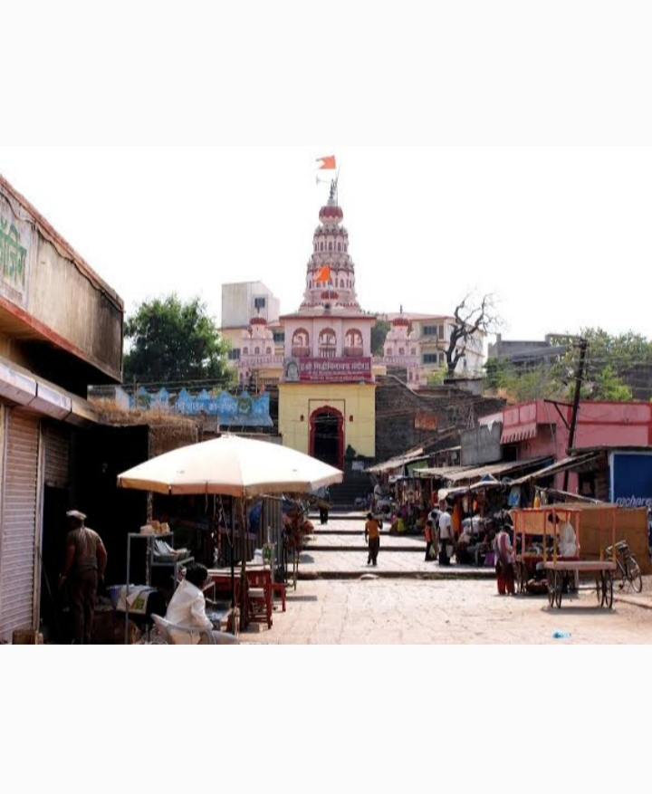

The Siddhivinayak Temple of Siddhatek is a Hindu temple dedicated to Ganesha, the elephant-headed god of wisdom. The temple is one of the Ashtavinayaka, the eight revered shrines of Ganesha in the Indian state of Maharashtra and the only Ashtavinayaka shrine in Ahmednagar district.
Place:-Religinious Address:-Shree Siddhivinayak Temple, Taluka, Karjat, Ahmednagar, 414402 City:-Ahmednagar Pincode:-414402 Country:-India Phone:-022 2422 4438 Fax No.:– Timings:– 4.00 AM – 9.15 PM.